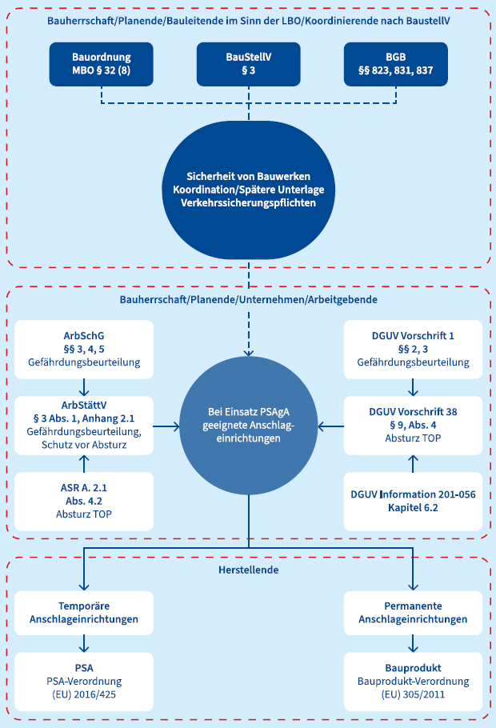
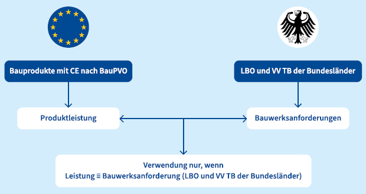
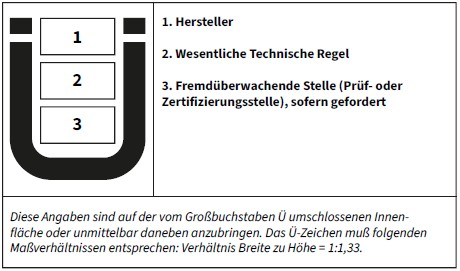
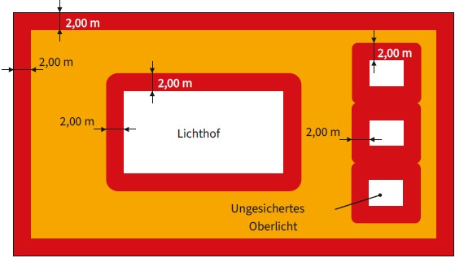

Beim Planen und Errichten von Gebäuden ist das jeweilige Bauordnungsrecht des Bundeslandes, in dem gebaut wird, einzuhalten.
Das Bauordnungsrecht richtet sich an den Bauherrn bzw. die Bauherrin, der bzw. die entsprechend fachlich geeignete Beteiligte zur Planung und Durchführung von Baumaßnahmen beauftragen muss.
Die Arbeitsstättenverordnung (ArbStättV) richtet sich an die Arbeitgeber beim Errichten und Betreiben von Arbeitsstätten. Die Technischen Regeln für Arbeitsstätten (ASR) konkretisieren die Anforderungen der Arbeitsstättenverordnung.
Das Bauordnungsrecht enthält die grundlegenden Festlegungen, nach denen gebaut und betrieben werden muss. Die Arbeitsstättenverordnung gibt an, welche zusätzlichen Vorschriften noch mit zu berücksichtigen sind. Dabei können Bauordnungsrecht und Arbeitsschutzvorschriften nicht voneinander losgelöst betrachtet werden und die jeweils höherwertigeren Maßnahmen finden Anwendung.
Die Baustellenverordnung (BaustellV) richtet sich insbesondere an den Bauherrn bzw. die Bauherrin und soll zur Verbesserung von Sicherheit und Gesundheitsschutz auf Baustellen beitragen. Zu den Aufgaben des Koordinators nach BaustellV (auch Sicherheits- und Gesundheitsschutzkoordinator – SiGeKo genannt) gehört u. a. das Zusammenstellen einer Unterlage für spätere Arbeiten mit erforderlichen Angaben zur Sicherheit und Gesundheit, die z. B. bei Reinigungs-, Wartungs- und Instandsetzungsarbeiten an der baulichen Anlage zu berücksichtigen sind.
Die Bauherrschaft ist bei der Errichtung, Änderung, Instandhaltung, Nutzungsänderung oder dem Abbruch baulicher Anlagen dafür verantwortlich, dass die öffentlich-rechtlichen Vorschriften eingehalten werden und trägt die Gesamtverantwortung für die Durchführung des Bauvorhabens. Alle von der Bauherrschaft mit der Planung und dem Bau beauftragten Personen und Firmen müssen nach Sachkunde und Erfahrung für ihren Aufgabenbereich geeignet sein. Die Bauherrschaft muss für die erforderliche Organisation sorgen und bei der Beauftragung von Fachleuten (wie vor allem Entwurfsverfassende, Koordinierende, Planende, Bauleitende, bauausführende Unternehmen) im Rahmen seiner bzw. ihrer Gesamtverantwortung für die Berücksichtigung der Belange des Arbeitsschutzes sorgen. Weiterhin muss die sichere und gesundheitsgerechte Ausführung eines Bauvorhabens gewährleistet sein. Hierbei sind die allgemeinen Grundsätze nach § 4 des Arbeitsschutzgesetzes bei der Planung der Ausführung, Ausschreibung und Vergaben zu berücksichtigen.
Die Bauherrschaft hat auch die Verpflichtungen gemäß der Baustellenverordnung zur Einleitung und Umsetzung von in der Baustellenverordnung verankerten baustellenspezifischen Arbeitsschutzmaßnahmen.

Abb. 2 Zuordnung von Verantwortlichkeiten
Die Eigentümer bzw. Eigentümerin, egal ob private Eigentümer oder Bund, Länder oder kommunale Körperschaften, sind für die ordnungsgemäße Instandhaltung, d. h. die Wartung, die Überprüfung und gegebenenfalls die Instandsetzung von baulichen Anlagen verantwortlich. Die Maßnahmen der Instandhaltung dienen nicht nur den eigenen Interessen zur Erhaltung der Bausubstanz, sondern auch der Erfüllung der Verkehrssicherungspflichten gemäß § 823 BGB gegenüber Dritten.
Die betreibenden Personen (oder Organisationen) eines Gebäudes oder einer Anlage können sowohl Eigentümer bzw. Eigentümerin oder mietende sowie pachtende Personen sein. Die betreibende Person ist dazu verpflichtet das Gebäude und Anlagen in einem verkehrssicheren Zustand zu halten. Dies umfasst auch die Verpflichtung mögliche Gefahren zu erkennen und Maßnahmen gegen diese Gefahren zu ergreifen (Unfallschutz). Diese Verpflichtung resultiert aus einer grundsätzlichen Verkehrssicherungspflicht. Diese kann unter Umständen auch noch um vertragliche Schutzpflichten erweitert werden. Die Einhaltung der Regeln des Stands der Technik und ergänzender Regelwerke können zudem zu einer erweiterten Verantwortung führen.
Auftraggebende sind für die Auswahl und Beauftragung einer geeigneten Firma zur Durchführung der Arbeiten oder der Wartung-, Inspektions- und Instandsetzungsarbeiten verantwortlich.
Auftraggebende vergeben die Arbeiten ausschließlich an Fachfirmen bzw. Fachabteilungen. Eine Fachkunde ist u. a. für folgende Arbeiten notwendig:
Bei Auftragserteilung durch ein Unternehmen sind folgende besondere Pflichten zu beachten:
Bei Auftragserteilung durch Privatpersonen kann die Beurteilung der jeweiligen Fachkunde durch Einsichtnahme entsprechender Referenzen sowie durch weitere Fachkunde- und Qualifizierungsnachweise der beauftragten Fachfirma erfolgen.
Bei der Planung eines Bauwerkes sind im Sinne der geltenden Regelwerke bzw. relevanter technischer Bestimmungen die Erfordernisse für die sichere Durchführung von späteren Arbeiten zu berücksichtigen und entsprechende Maßnahmen und Einrichtungen vorzusehen.
Die planende oder bauleitende Person hat den Auftraggebenden bei verschuldet fehlerhaften Arbeiten die daraus entstehenden Schäden und Kosten zu ersetzen. Dies gilt insbesondere bei Verletzung seiner Sorgfalts- und Treuepflicht, bei Nichtbeachtung oder Verletzung bestehender Verordnungen oder anerkannter Fachregeln, bei mangelnder Koordination oder Beaufsichtigung, bei ungenügender Kostenerfassung sowie bei Nichteinhaltung von verbindlich vereinbarten Fristen oder Terminen.
Die herstellende bzw. die inverkehrbringende Firma ist verantwortlich, dass die angebotenen Produkte zum Zeitpunkt des Inverkehrbringens sicher sind und den geltenden Normen und Zulassungen entsprechen. Sie hat die erforderlichen Dokumente (z. B. Produktzulassungen, Montageanleitungen, Wartungshinweise) zur Verfügung zu stellen.
Auftragnehmende dürfen nur zugelassene Produkte verwenden und müssen die entsprechenden Dokumente vorhalten und an den Bauherrn bzw. die Bauherrin übergeben. Bei erkennbaren Abweichungen zur Planung und Ausführung haben Auftragnehmende die Bauherrschaft auf diese Abweichungen hinzuweisen.
Auftragnehmende (Herstellung Dach, Aufbauten, techn. Anlagen, Dachbegrünungen etc.) haben die Bauherrschaft auf die Notwendigkeit der Planung von Sicherheitsmaßnahmen und Einrichtungen für nachträgliche Arbeiten hinzuweisen.
Die Auftragnehmenden können die Arbeiten teilweise oder komplett an andere Fachfirmen weitergeben, sofern dieser Verfahrensweise nicht vertragliche Regelungen mit den Auftraggebenden entgegenstehen.
Die Anforderungen an das Bauwerk und an die Beteiligten werden in der jeweiligen Bauordnung der Länder geregelt. Zur Darstellung der relevanten Vorschriften des Baurechts wird im Folgenden auf die Musterbauordnung (MBO) eingegangen.
Gemäß § 3 der Musterbauordnung sind bauliche Anlagen so anzuordnen, zu errichten, zu ändern und instand zu halten, dass nicht Leben, Gesundheit und die natürlichen Lebensgrundlagen gefährdet werden. Dabei müssen die sieben Grundanforderungen an Bauprodukte gemäß EU-Verordnung 305/2011 mitberücksichtigt werden. Nach der Vierten Grundanforderung müssen Bauwerke so entworfen und die bauliche Umsetzung so sein, dass während Nutzung/Betrieb keine Unfallgefahren wie bspw. Rutsch-, Sturz- und Aufprallunfälle, Verbrennungen, Stromschläge entstehen.
Die Pflichten der am Bau Beteiligten werden in den §§ 52 bis 56 der Musterbauordnung beschrieben. Gemäß § 52 MBO müssen alle öffentlich-rechtlichen Vorschriften mit eingehalten werden.
MBO § 32 Dächer, Absatz 8 lautet "Für vom Dach aus vorzunehmende Arbeiten sind sicher benutzbare Vorrichtungen anzubringen." Wie diese sichere Vorrichtung ausgestaltet werden muss, ist jedoch nicht weiter in der MBO beschrieben.
Im § 38 Umwehrungen MBO wird beschrieben, dass gemäß
mit Umwehrungen oder mit Brüstungen zu versehen sind. Nähere Erläuterungen werden in den Verwaltungsvorschriften der technischen Baubestimmungen des jeweiligen Bundeslands beschrieben.
Nach §§ 16 a und 16 b MBO sind Bauarten und Bauprodukte für die Erstellung von Bauwerken auszuwählen. Das Inverkehrbringen von Bauprodukten ist in den §§ 16c, 18, 19 und 20 MBO beschrieben. Hiernach können Bauprodukte nach
zugelassen werden.
Die Produkt-Kennzeichnung erfolgt bei Nr. 1 und 2 mit dem CE-Zeichen und bei den Nummern 3 bis 5 mit dem nationalen Ü-Zeichen.
Die Besonderheit von Bauprodukten ist, dass der Verwender überprüfen muss, ob die Leistungen des Produktes den Bauwerksanforderungen genügen.

Abb. 3 Überprüfung Produktleistung/Bauwerksanforderungen (Bauproduktenverordnung – BauPVO, Landesbauordnung – LBO, Verwaltungsvorschrift Technische Baubestimmungen – VV TB)
Abb. 4 Muster für CE-Kennzeichnung

Abb. 5 Muster Ü-Zeichen
Die Verwendung der Bauprodukte wird national in einer allgemeinen Bauartgenehmigung (aBG) oder vorhabenbezogenen Bauartgenehmigung (vBG) nach § 16a MBO geregelt. Weiter ist ein Nachweis nach technischen Baubestimmungen z. B. durch eine statische Berechnung der Befestigung und des Untergrunds möglich.
Für die Planung von Arbeitsplätzen und Verkehrswegen auf Dachflächen sowie das Betreten von Dachflächen und die Sicherung von Gefahrenbereichen sind die Arbeitsstättenverordnung (ArbStättV) mit den dazugehörigen Technischen Regeln für Arbeitsstätten ASR A2.1 und ASR A1.8 zu berücksichtigen. Insbesondere sind ab einer Absturzhöhe von mehr als 1,00 m gem. Nr. 2.1 des Anhangs der ArbStättV an Arbeitsplätzen und Verkehrswegen Schutzvorrichtungen vorzusehen oder andere sichere Maßnahmen zu treffen sowie die Gefahrenbereiche Absturz abzusperren und zu kennzeichnen.
In Nr. A2.1 des Anhangs der ArbStättV ist festgeschrieben, dass eine Absturzgefahr bei einer Absturzhöhe von mehr als 1,00 m besteht. Zudem ist die Rangfolge der Schutzmaßnahmen vom baulichen Kollektivschutz bis zu individuellen (personenbezogenen) Schutzmaßnahmen beschrieben, wobei der Kollektivschutz immer Vorrang zum Individualschutz hat. Umwehrungen, als Kollektivschutz, müssen mindestens 1,00 m hoch sein. Ab einer Absturzhöhe von 12,00 m beträgt die Mindesthöhe für Umwehrungen 1,10 m. Eine Verringerung der Brüstungshöhe ist nicht zulässig.
Bereiche die mehr als 2,00 m von der Absturzkante entfernt sind, liegen außerhalb des Gefahrenbereiches Absturz und können z. B. mit Absperrungen, Seilen oder Ketten inkl. einer Kennzeichnung abgesperrt werden.

Abb. 6 Darstellung der Gefahrenbereiche Absturz
Bei Verkehrswegen außerhalb des Gefahrenbereichs Absturz ist es ausreichend, wenn diese auf der Dachfläche gekennzeichnet sind und wenn die Abgrenzung optisch deutlich erkennbar ist. Die Wirksamkeit dieser Schutzmaßnahme ist während der Nutzungsdauer sicher zu stellen. Gegebenenfalls sind Zugangsbeschränkungen bei Witterungsbedingung wie Schneefall festzulegen. Die lichte Breite von Verkehrswegen ist bei bis zu 5 Personen mit min. 0,90 m herzustellen. Die lichte Breite von Gängen zur Instandhaltung, Gängen zu Betriebseinrichtungen ohne Begegnungsverkehr ist mit min. 0,60 m (siehe ASR A1.8, Punkt 4.2 Tab.2) angegeben.
Die Verkehrswege müssen bei allen Witterungseinflüssen sicher benutzbar sein (siehe ASR A1.8, Punkt 4.1).
Verkehrswege zu hochgelegenen Arbeitsplätzen sind in Abhängigkeit der Nutzungsfrequenz als Treppe, Hilfstreppe oder ggf. auch als Steigleiter auszuführen (siehe ASR A1.8, Punkt 4.5 und 4.6).
Rangfolge der Schutzmaßnahmen
Die Vorschriften basieren auf dem Grundsatz der Gefährdungsminimierung, der mit § 4 des Arbeitsschutzgesetzes gesetzlich festgelegt ist: Die Arbeiten sind grundsätzlich so zu planen und zu gestalten, dass eine Gefährdung der Versicherten möglichst vermieden und die verbleibende Gefährdung geringgehalten wird. Hierbei sollen Gefahren an der Quelle bekämpft werden. Sowohl für die Planung und die Bauwerkserstellung sowie der vorhersehbaren späteren Arbeiten am Bauwerk gilt der Grundsatz: "Technische Maßnahmen haben Vorrang vor individuellen Schutzmaßnahmen!"
Zur Sicherung gegen Absturz existieren drei Gruppen von Schutzmaßnahmen:
Es gilt das Prinzip: "Absturzsicherung vor Auffangeinrichtung", denn auch beim Auffangen besteht ein Verletzungsrisiko. Nach dem STOP-Prinzip haben bei vorhandenen Gefährdungen technische Schutzmaßnahmen Vorrang vor organisatorischen Schutzmaßnahmen. Lassen sich beide nicht realisieren, ist nur in letzter Instanz zu persönlichen Schutzmaßnahmen zu greifen.
Die Bauherrenschaft muss gemäß Baustellenverordnung immer dann einen oder mehrere Koordinatoren bestellen, wenn Beschäftigte mehrerer Unternehmen auf der Baustelle arbeiten.
Zu den Aufgaben der Koordinatoren gehört neben der Beratung der Bauherrschaft zu Themen wie der Bauablaufplanung, zur Baustelleneinrichtung, zu Altlasten, zur Abfallentsorgung, zum Brandschutz und zur Verkehrssicherung von Baustellen auch das Zusammenstellen einer Unterlage für spätere Arbeiten. Form und Inhalt der Unterlage für spätere Arbeiten werden in RAB 32 konkretisiert. Zu den Teilen der baulichen Anlagen – z. B. Dächern – sollen insbesondere für die vorhersehbaren Arbeiten zur Instandhaltung Angaben zur Art dieser Arbeiten, den damit verbundenen Gefährdungen und die erforderlichen Angaben zu Sicherheit und Gesundheitsschutz entsprechend den baulichen Merkmalen erfolgen. Bei den Angaben zu Sicherheit und Gesundheit sind neben den vorhandenen sicherheitstechnischen Einrichtungen ggf. auch organisatorische Maßnahmen oder Maßnahmen zum Gesundheitsschutz zu nennen.
Eine sichere und instandhaltungsgerechte Planung baulicher Anlagen hat maßgeblichen Einfluss auf Kosten, Qualität und Arbeitsschutz bei späteren Arbeiten.
| Weitere Informationen zu den Anforderungen der Baustellenverordnung können den Regeln zu dem Arbeiten auf Baustellen (RAB) entnommen werden. www.baua.de/rab |
Bei Bauwerken, die nicht der Arbeitsstättenverordnung unterliegen, sind die Unfallverhütungsvorschriften der Unfallversicherungsträger anzuwenden. Anforderungen an Arbeitsplätze und Verkehrswege sind mit § 8 DGUV Vorschrift 38 "Bauarbeiten" beschrieben. Die Schutzmaßnahmen gegen Absturz sind mit § 9 DGUV Vorschrift 38 geregelt.
DIN EN 17235 beschreibt die Bewertung der Leistungsmerkmale an permanente Anschlageinrichtungen und Sicherheitsdachhaken. Neben Prüfverfahren werden auch Leistungsmerkmale und Anforderungen an die Untergründe mit beschrieben.
In der DIN 4426 werden sicherheitstechnische Anforderungen an Arbeitsplätze und Verkehrswege beschrieben und geben der Bauherrschaft und seinen bzw. ihren Planenden eine Hilfestellung, Bauwerke und deren Instandhaltung sicher zu konzipieren. Ebenso werden die allgemeinen Anforderungen zur Instandhaltung baulicher Anlagen hinsichtlich der Gestaltung von Arbeitsplätzen und Verkehrswegen in dieser Norm beschrieben. Die DIN 4426 ist nicht in die Verwaltungsvorschrift der Technischen Baubestimmungen der Bundesländer aufgenommen. Technische Baubestimmungen im Sinne von § 85a Musterbauordnung enthalten Planungs-, Bemessungs- und Ausführungsregelungen, z. B. für Lastannahmen zur Bemessung von Schutzeinrichtungen.
DIN EN 13306 definiert und beschreibt die zentralen Grundbegriffe des Instandhaltungsmanagements und bestimmt die Begrifflichkeiten für alle Arten von Instandhaltungen und Instandhaltungsmaßnahmen.
In der VDI 3810 Blatt 1.1 werden die Verantwortlichkeiten der Gebäudebetreibenden und der Gebäudeeigentum besitzenden Personen im Einzelnen dargestellt. Insbesondere ergibt sich aus dieser Richtlinie auch, dass die Eigentümer bzw. Eigentümerinnen die Verantwortung bzgl. des ordnungsgemäßen Zustandes des Gebäudes oder der technischen Gebäudeanlagen nicht vollständig auf die gebäudebetreibende bzw. nutzende Person übertragen kann. Die Kontrollpflicht der übertragenen Verantwortlichkeiten verbleibt stets beim Eigentümer bzw. der Eigentümerin.
In der VDE 0105-100 werden die Verantwortlichkeiten von betreibenden Personen elektrischer Anlagen wie z. B. PV-Anlagen dargestellt. Sie beschreibt die Anforderungen für sicheres Bedienen von und Arbeiten an, mit oder in der Nähe von elektrischen Anlagen. Diese Anforderungen gelten für alle Bedienungs-, Arbeits- und Wartungsverfahren und auch für alle nichtelektrotechnischen Arbeiten in der Nähe. Sie beschreibt unter anderem, dass die anlagenbetreibende Person für den sicheren Betrieb und den ordnungsgemäßen Zustand der elektrischen Anlage zuständig ist.